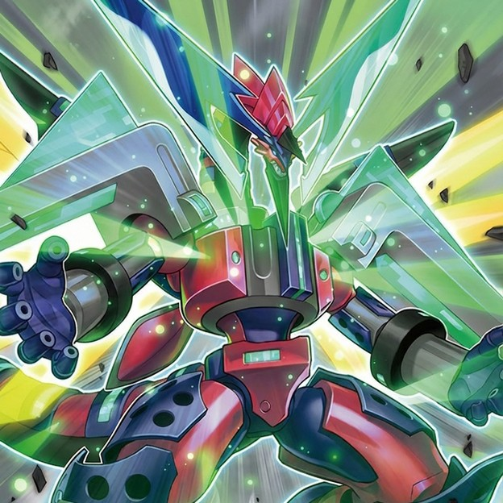

弹丸
裁定
「亡龙之战栗-死欲龙」
●: 与其他怪兽因为效果一起返回卡组时, 处理完后需要洗切卡组. 如果效果是一起返回卡组最底下, 则不需要.
「枪管重启」对灵摆卡的发动而发动时, 将灵摆卡发动无效. 灵摆卡因为不能盖放而送去墓地.
「双三角龙」效果处理时自身控制权被对方获得在对方场上存在的场合, 不处理特殊召唤.
「守护龙 毗斯缇」②效果处理时, 没有受2只以上的连接怪兽所连接区的场合, 不处理特殊召唤.
通过「装弹枪管龙」的③效果得到控制权的怪兽被一时除外的场合, 回到「装弹枪管龙」持有者的场上后, 处理完毕, 不会归还控制权, 不会再被送去墓地. 下个回合的结束阶段被跳过的场合, 也一样.
「装弹枪管龙」③效果发动后, 处理时连接端都有怪兽存在的场合, 那只对方怪兽被破坏送去墓地.
「刺刀枪管龙」的②效果处理时对象怪兽不在场上存在, 无法变成守备表示的场合, 仍然可以攻击2次.
发动魔法/陷阱卡被「装弹枪管狞猛龙」③效果的无效的场合, 卡不视为在场上, 处理完毕也不视为从场上送去墓地, 也不算效果送去墓地, 也不算因为自己送去墓地.
注意
「亡龙之战栗-死欲龙」
●: 处理时, 作为对象的怪兽不在怪兽区域表侧表示存在的场合, 等级仍是7.
●: 适用后, 被无效的场合, 等级变回7.
●: 适用后, 变为里侧, 变成魔法/陷阱卡失去离场回卡组最底下的状态.
「弹丸雨幕龙」
●: ②是即时诱发效果. 发动以它为对象的连接怪兽的效果后, 需要先询问对方连锁.
●: ②效果把自身破坏成功, 才能处理后续. 处理时这张卡不在怪兽区域表侧表示存在的场合, 这张卡破坏都不会正常处理. 类似的「弹丸曳光龙」, 「三枪管龙」, 「前托枪管龙」, 「主动撞针龙」也一样.
「三重枪管旋转」回到额外卡组也是回到卡组. 选择第二个或是第三个效果时, 都回成功才能处理后续.
「速攻旋转」特殊召唤的怪兽EP要自爆.
「旋转引导扇区」会给场上的「弹丸」怪兽加攻. 不给「枪管」加攻. ②效果选择第二个发动时, 参考处理时的怪兽差值.
「装弹枪管狂怒龙」②效果只能拉墓地暗连接.
「装弹枪管狞猛龙」被无效的场合, 因自身效果装备的装备自坏, 失去全部枪管指示物.
「救祓少女·卡尔麦尔」②效果处理时, 自己墓地不存在任何卡的场合, 效果也正常适用.
「前托枪管龙」③效果只能点怪兽, 不能点卡.
「后膛枪管龙」②效果处理时, 对象怪兽变成里侧守备表示的场合, 完全不处理. 只能拉5星以上怪兽.
「守护龙 毗斯缇」一回合只能特召一次.
召唤素材注意
「装弹枪管死焰龙」的融合素材是暗连接与暗.
「装弹枪管狂怒龙」的素材是暗龙.
「救祓少女·卡尔麦尔」只能用「救祓少女」叠.
「三枪管龙」的素材必须包含「弹丸」, 且只能是暗龙. 「后膛枪管龙」也一样.
「削短枪管龙」的素材必须包含「弹丸」, 且只能是龙.
「双三角龙」必须是4星以下龙. 「亡龙之战栗-死欲龙」的对象丢失情况下自身自跳后仍旧7星, 不能作为这个的素材. 「守护龙 毗斯缇」, 「主动撞针龙」也一样.
自肃
「弹丸雨幕龙」①效果处理后有从额外的暗自肃.
「弹丸曳光龙」①效果处理后有从额外的暗自肃.
「弹丸快装龙」①效果处理后有从额外的暗自肃.
「速攻旋转」特殊召唤的怪兽不能攻击.
「装弹枪管狂怒龙」②效果特殊召唤的怪兽在那个回合不能把效果发动.
「削短枪管龙」效果处理后有不能Link1,2以下的怪兽自肃.
「双三角龙」效果特殊召唤的怪兽效果无效化, 这个回合不能攻击.
「守护龙 毗斯缇」有存续期间龙自肃.
卡组预览
盖放: 霆王的闪光, 灵王的波动, 无限泡影, 枪管重启